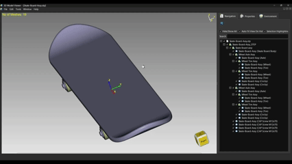
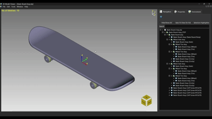
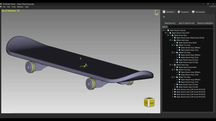
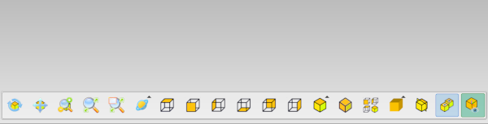
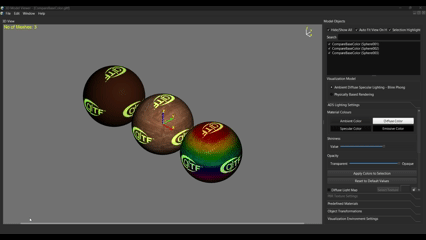
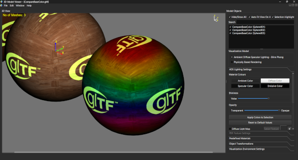
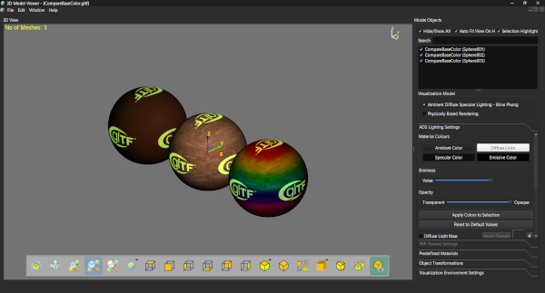

Lesson 3 of 14
Lesson 3: Basic Navigation
Introduction
Navigating the 3D viewport is essential for examining your models from all angles. ModelViewer provides intuitive mouse and keyboard controls for smooth navigation.
Mouse Navigation
The primary way to navigate the viewport:
Step 1: Rotating the View
Hold the Middle Mouse Button and drag to rotate the camera around your model.
Alternative: Hold Ctrl + Left Mouse Button and drag.
Alternative: Hold Ctrl + Left Mouse Button and drag.

Illustration showing middle mouse button rotation gesture with arrow indicators
The rotation uses inertial scrolling - if you move quickly and release, the view will continue to rotate smoothly and slow down gradually.
Step 2: Panning the View
Hold the Right Mouse Button and drag to move the camera side-to-side and up-down.
Alternative: Hold Ctrl + Right Mouse Button and drag.
Alternative: Hold Ctrl + Right Mouse Button and drag.

Illustration showing right mouse button panning gestureStep 3: Zooming the View
Use the Mouse Wheel to zoom in and out.
Alternative: Hold Ctrl + Middle Mouse Button and drag vertically.
Alternative: Hold Ctrl + Middle Mouse Button and drag vertically.

Illustration showing mouse wheel zoom
The zoom is centered on your mouse position, so point at what you want to zoom towards before scrolling.
Step 4: Quick Center Pan
Click the Middle Mouse Button (press and release, don't drag) to pan the view to center on a new point.
Keyboard Navigation
For precise control and extended navigation:
| Keys | Action |
|---|---|
| W / A / S / D | Move camera (behavior depends on camera mode) |
| I / K | Rotate around X-axis (pitch up/down) |
| J / L | Rotate around Y-axis (yaw left/right) |
| M / N | Rotate around Z-axis (roll clockwise/counter-clockwise) |
| X / Z | Zoom in/out (Orbit mode only) |
| F | Fit all objects in view |
Hold the navigation keys continuously for smooth, continuous movement.
Using the View Toolbar
The toolbar provides an alternative way to activate navigation modes:
Step 1: Reveal the Toolbar
Move your mouse to the bottom edge of the viewport to reveal the toolbar.

View toolbar appearing at bottom of viewportStep 2: Click Navigation Mode
Click Rotate, Pan, or Zoom button to activate that mode.
Step 3: Use Left Mouse Button
Once a mode is active, use the Left Mouse Button to perform that action. The cursor changes to indicate the active mode.

Different cursor icons for Rotate, Pan, and Zoom modes
Press Esc to cancel any active navigation mode and return to normal selection mode.
Fitting Objects to View
The 'Fit All' feature is one of the most useful navigation tools:
Step 1: Press F Key
Simply press F to automatically frame all visible objects in the viewport.
Step 2: Or Use Toolbar
Click the 'Fit All' button in the view toolbar.

Before Fit All: Object partially visible and off-center
After Fit All: Object perfectly centered and sized to fit viewport
Use Fit All whenever you feel lost in the 3D space or after hiding/showing objects to reframe your view.
Practice Exercise
Try this exercise to master basic navigation:
- Open any 3D model
- Use middle mouse to rotate the view 360 degrees around the model
- Use right mouse to pan the model to different corners of the screen
- Zoom in very close to see surface details
- Press F to reset and fit all
- Try the keyboard navigation keys (W/A/S/D, I/J/K/L)
- Activate Rotate mode from toolbar and use left mouse to rotate
Practice until these movements feel natural!